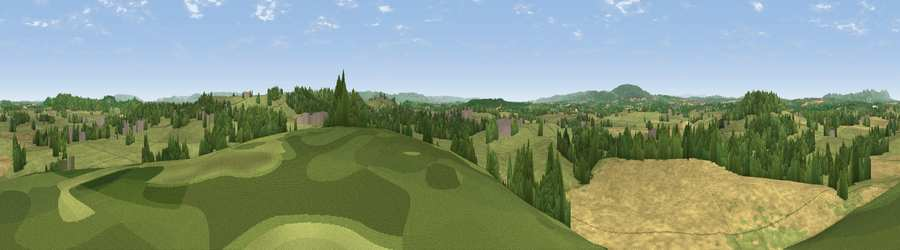

Viewpoint near Hartpury
#18240 in England · top 42% of its area beats it · near HartpuryThe view, rendered

A 360° render of this exact spot computed from the terrain model, tree cover and land cover — summer colours, afternoon light, calibrated against photographs of famous viewpoints. Real trees, hedges and buildings will differ in detail.
The panorama
Grey silhouette: terrain skyline in each direction (720 bearings, Earth curvature and refraction included). Dashed green: skyline with trees (+15 m) and buildings (+8 m) as obstacles. Blue strip: how far the ground is visible on each bearing.
Where the view opens
Wedge length = distance to the farthest visible ground on that bearing (vegetation-aware). Rings at 10, 25 and 50 km.
What fills the view
53% grassland · 30% cropland · 15% woodland · 1% built-up
Angular shares of the visible panorama (visual magnitude), not map area. Landscape diversity 0.45 (0–1 Shannon).
Key numbers
More beautiful places nearby
The staircase of upgrades: each row has a higher view potential than everything closer. Driving times are estimates from straight-line distance, calibrated against real road routing — check an actual route before setting out.
| Place | Direction | Drive | Score |
|---|---|---|---|
| Viewpoint near Hartpury | E · 2 km | ~5 min | 60.0 |
| Viewpoint near Hasfield | NE · 4 km | ~9 min | 62.7 |
| Viewpoint near Sandhurst | E · 5 km | ~10 min | 66.7 |
| Corse Grove Hill | NE · 5 km | ~11 min | 67.6 |
| Viewpoint near May Hill | WSW · 9 km | ~18 min | 68.0 |
| Viewpoint near May Hill | WSW · 10 km | ~19 min | 76.1 |
| Viewpoint near Whaddon | SSE · 11 km | ~20 min | 77.7 |
| Chase End Hill | NNW · 11 km | ~21 min | 81.5 |
51.91930, -2.30711 · source: screening · position refined by local search. Computed location — check access rights before visiting.